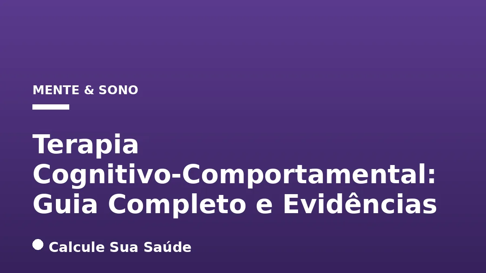

Aviso médico importante
Este conteúdo é educativo e informativo e não substitui a consulta, o diagnóstico ou o tratamento de um profissional de saúde. Em caso de sintomas, procure orientação médica.
Índice do Artigo
- 1. O Que é a Terapia Cognitivo-Comportamental (TCC)?
- 2. Fundamentos Teóricos da TCC: A Interconexão Cognitiva
- 3. Conceitos Essenciais da TCC: Desvendando a Mente
- 4. Como os Transtornos Mentais se Desenvolvem na Perspectiva da TCC
- 5. Sintomas e Manifestações Abordadas pela TCC
- 6. O Processo Diagnóstico e o Papel da TCC
- 7. A TCC como Ferramenta de Prevenção em Saúde Mental
- 8. O Tratamento na TCC: Estrutura e Duração
- 9. Técnicas Terapêuticas da TCC: Ferramentas para a Mudança
- 10. A TCC e seu Nível de Evidência Científica: O Reconhecimento da OMS
- 11. Condições Clínicas Tratadas com Sucesso pela TCC
- 12. Desmistificando a TCC: Mitos Comuns vs. Realidade Científica
- 13. A TCC no Contexto Brasileiro: Panorama e Crescimento
- 14. Como Encontrar um Profissional de TCC Qualificado
- 15. Conclusão: O Impacto Transformador da TCC
- 16. Perguntas frequentes
A Terapia Cognitivo-Comportamental (TCC) representa uma das abordagens psicoterapêuticas mais estudadas e cientificamente validadas no panorama da saúde mental. Desenvolvida por Aaron T. Beck nas décadas de 1960 e 1970, esta modalidade terapêutica integra de forma sinérgica conceitos e técnicas das abordagens cognitiva e comportamental, fundamentando-se na premissa de que existe uma interconexão intrínseca entre nossos pensamentos, emoções e comportamentos.
Reconhecida globalmente por sua eficácia no tratamento de uma vasta gama de condições, desde transtornos de ansiedade e depressão até problemas de relacionamento e dor crônica, a TCC se destaca por ser uma abordagem ativa, estruturada e focada no problema, com duração geralmente limitada. Seu principal objetivo é capacitar os indivíduos a identificar e modificar padrões de pensamento e comportamento disfuncionais que contribuem para o sofrimento psicológico.
Este artigo aprofundará os fundamentos, as aplicações e as evidências científicas que sustentam a TCC, desmistificando conceitos e oferecendo uma compreensão clara de como essa terapia pode promover uma significativa melhora na qualidade de vida. Compreender a TCC é um passo crucial para quem busca caminhos eficazes para o bem-estar mental e emocional, pautados em rigor científico.
Em resumo
- A TCC é uma psicoterapia estruturada e focada no problema, desenvolvida por Aaron T. Beck, que integra abordagens cognitiva e comportamental.
- Seu princípio central é que a forma como interpretamos os eventos influencia diretamente nossas emoções e comportamentos.
- Conceitos-chave incluem pensamentos automáticos, crenças disfuncionais, crenças intermediárias e crenças nucleares, além da tríade cognitiva.
- A TCC utiliza técnicas como reestruturação cognitiva, exposição gradual e registro de pensamentos para promover flexibilidade cognitiva.
- É classificada pela OMS como a psicoterapia com maior nível de evidência científica, sendo tratamento de primeira linha para diversos transtornos.
- É eficaz para uma ampla gama de condições, incluindo depressão, transtornos de ansiedade, TOC, transtornos alimentares e dependência química.
1. O Que é a Terapia Cognitivo-Comportamental (TCC)?
A Terapia Cognitivo-Comportamental (TCC) é uma modalidade de psicoterapia que se firmou como um pilar fundamental no tratamento de diversas condições de saúde mental. Sua essência reside na compreensão de que nossos pensamentos, sentimentos e ações estão intrinsecamente conectados e se influenciam mutuamente. Ao contrário de abordagens que podem focar predominantemente no passado, a TCC é orientada para o presente e para a resolução de problemas, buscando auxiliar os indivíduos a desenvolverem estratégias mais adaptativas para lidar com os desafios da vida.
Essa abordagem terapêutica, criada pelo psiquiatra americano Aaron T. Beck na década de 1960, surgiu da observação de que pacientes com depressão frequentemente apresentavam padrões de pensamento negativos e distorcidos. Beck percebeu que, ao ajudar esses pacientes a identificar e questionar esses pensamentos, era possível promover uma melhora significativa em seu estado emocional e comportamental. A TCC, portanto, não se limita a aliviar sintomas, mas visa a uma mudança profunda e duradoura na forma como o indivíduo percebe a si mesmo, o mundo e o futuro.
2. Fundamentos Teóricos da TCC: A Interconexão Cognitiva
A TCC é construída sobre uma base teórica sólida que postula que a forma como interpretamos os acontecimentos, e não os acontecimentos em si, é o que determina nossas reações emocionais e comportamentais. Essa perspectiva é central para a compreensão de como os problemas psicológicos se desenvolvem e se mantêm. Por exemplo, duas pessoas podem vivenciar o mesmo evento estressor, mas reagir de maneiras completamente diferentes devido às suas interpretações distintas.
A abordagem cognitiva foca nos processos de pensamento, enquanto a abordagem comportamental se concentra nos padrões de ação e reação. A TCC integra essas duas vertentes, reconhecendo que a modificação de pensamentos disfuncionais pode levar a mudanças comportamentais e emocionais positivas, e vice-versa. É um processo colaborativo entre terapeuta e paciente, onde ambos trabalham ativamente para identificar, analisar e modificar os padrões que geram sofrimento. O objetivo final é promover a flexibilidade cognitiva, permitindo que o indivíduo adote perspectivas mais realistas e adaptativas diante das situações.
3. Conceitos Essenciais da TCC: Desvendando a Mente
Para compreender a TCC em profundidade, é fundamental familiarizar-se com seus conceitos-chave, que servem como lentes para analisar e intervir nos padrões de pensamento e comportamento dos pacientes. Estes conceitos formam a base da conceitualização cognitiva, um mapa individualizado que o terapeuta constrói para cada paciente.
Pensamentos Automáticos
São cognições rápidas, espontâneas e muitas vezes involuntárias que surgem em resposta a situações específicas. Eles podem ser positivos, negativos ou neutros e frequentemente estão associados a fortes emoções. Por exemplo, após cometer um pequeno erro, um pensamento automático pode ser 'Eu sou um fracasso'.
Crenças Disfuncionais
São padrões de pensamento arraigados que reforçam problemas emocionais e comportamentais. Elas incluem as distorções cognitivas, que são erros sistemáticos no processamento de informações. Exemplos incluem catastrofização (esperar o pior), generalização excessiva (concluir que um evento negativo isolado se repetirá sempre) e personalização (assumir responsabilidade por eventos externos).
Crenças Intermediárias
Representam regras, suposições ou pressupostos que sustentam as crenças nucleares. Elas geralmente tomam a forma de 'se... então...' ou 'eu devo...'. Por exemplo, 'Se eu não for perfeito, serei rejeitado' ou 'Eu devo agradar a todos para ser aceito'.
Crenças Nucleares (ou Centrais)
São as compreensões mais profundas e fundamentais que um indivíduo tem sobre si mesmo, o mundo e o futuro. São consideradas verdades absolutas e são mais difíceis de serem acessadas e modificadas. Podem ser positivas ('Eu sou competente') ou negativas ('Eu sou inadequado', 'Eu sou incapaz'). As crenças nucleares negativas são frequentemente a base de muitos transtornos psicológicos.
Tríade Cognitiva
Conceito frequentemente observado em pacientes com depressão, refere-se a um estilo negativo de pensamento sobre si mesmo, o mundo e o futuro. Por exemplo, 'Eu sou inútil', 'O mundo é injusto' e 'Meu futuro é sombrio'.
Reestruturação Cognitiva
É o processo central da TCC, onde o paciente, com o auxílio do terapeuta, aprende a identificar, questionar e modificar pensamentos distorcidos ou disfuncionais por cognições mais realistas, equilibradas e adaptativas. Este processo envolve a coleta de evidências a favor e contra um pensamento, a busca por perspectivas alternativas e a avaliação das consequências de manter ou mudar um determinado pensamento.
4. Como os Transtornos Mentais se Desenvolvem na Perspectiva da TCC
A TCC adota uma visão multifatorial para a etiologia dos transtornos mentais, compreendendo que eles emergem de uma interação complexa entre fatores biológicos, psicológicos e sociais. Não há uma causa única, mas sim uma rede de influências que, em conjunto, podem predispor ou desencadear o desenvolvimento de patologias.
Fatores Predisponentes
São elementos que aumentam a vulnerabilidade de um indivíduo a desenvolver um transtorno. Isso inclui um histórico familiar de transtornos mentais, que pode indicar uma predisposição genética ou ambiental. Traumas na infância, como abuso ou negligência, podem moldar crenças nucleares negativas e padrões de pensamento disfuncionais. Estressores crônicos, como dificuldades financeiras ou problemas de relacionamento prolongados, também contribuem para a vulnerabilidade. Além disso, padrões de pensamento aprendidos, muitas vezes observados e internalizados a partir do ambiente familiar ou social, podem se tornar disfuncionais ao longo do tempo.
Fatores Desencadeantes
São eventos ou situações que precipitam o início de um transtorno em um indivíduo já vulnerável. Eventos estressantes agudos, como a perda de um emprego ou uma separação, podem sobrecarregar os mecanismos de enfrentamento. Mudanças significativas de vida, mesmo que positivas, podem gerar estresse. Perdas e luto, seja de um ente querido ou de um ideal, são potentes desencadeadores de sofrimento emocional. A TCC ajuda o paciente a entender como esses fatores interagem com suas cognições para gerar e manter os sintomas.
5. Sintomas e Manifestações Abordadas pela TCC
A TCC é uma abordagem versátil que pode intervir em uma ampla gama de sintomas e manifestações de sofrimento psicológico. Ela foca em como esses sintomas se manifestam nos domínios cognitivo, emocional e comportamental, buscando identificar os padrões disfuncionais subjacentes.
Sintomas Cognitivos
No plano cognitivo, a TCC aborda pensamentos negativos recorrentes, que podem ser intrusivos e difíceis de controlar. Crenças disfuncionais, como as distorções cognitivas (catastrofização, generalização excessiva, pensamento dicotômico), são alvos centrais da intervenção. A reestruturação cognitiva visa a modificar esses padrões para promover uma visão mais equilibrada da realidade.
Sintomas Emocionais
Emocionalmente, a TCC é eficaz no manejo de ansiedade persistente, que pode se manifestar como preocupação excessiva, ataques de pânico ou fobias. A tristeza intensa, característica da depressão, e a irritabilidade frequente também são abordadas. O medo desproporcional a situações ou objetos específicos é trabalhado através de técnicas de exposição e dessensibilização.
Sintomas Comportamentais
No âmbito comportamental, a TCC atua na modificação de comportamentos de evitação, que impedem o indivíduo de enfrentar situações desafiadoras. A procrastinação, o isolamento social e comportamentos compulsivos (como lavagem excessiva das mãos no TOC) são exemplos de manifestações que podem ser trabalhadas. A ativação comportamental, por exemplo, é uma técnica que incentiva o paciente a se engajar em atividades prazerosas ou significativas para quebrar o ciclo da inatividade e do humor deprimido.
6. O Processo Diagnóstico e o Papel da TCC
É crucial entender que a TCC, por si só, não é uma ferramenta diagnóstica. O diagnóstico de transtornos mentais é uma etapa anterior e fundamental, realizada por profissionais de saúde mental, como psiquiatras ou psicólogos clínicos, através de uma avaliação abrangente. Esta avaliação se baseia em critérios diagnósticos padronizados, estabelecidos por manuais internacionalmente reconhecidos.
Os principais manuais utilizados para o diagnóstico são o DSM (Manual Diagnóstico e Estatístico de Transtornos Mentais), publicado pela Associação Americana de Psiquiatria, e a CID (Classificação Internacional de Doenças), da Organização Mundial da Saúde (OMS). Estes manuais fornecem descrições detalhadas dos sintomas, critérios de inclusão e exclusão, e a duração necessária para que um conjunto de sintomas seja classificado como um transtorno específico.
Uma vez que o diagnóstico é estabelecido, a TCC entra em cena como uma abordagem terapêutica. O terapeuta de TCC utiliza a informação diagnóstica, juntamente com uma conceitualização cognitiva individualizada do paciente, para planejar e implementar o tratamento. A conceitualização cognitiva é um mapa que descreve como os pensamentos, emoções e comportamentos do paciente estão interligados e contribuem para seus problemas específicos, permitindo um plano de tratamento altamente personalizado e eficaz.
7. A TCC como Ferramenta de Prevenção em Saúde Mental
Embora seja amplamente conhecida por seu papel no tratamento de transtornos mentais já estabelecidos, a TCC também possui um potencial significativo como ferramenta preventiva. Ao equipar os indivíduos com habilidades cognitivas e comportamentais, ela pode fortalecer sua resiliência e reduzir a vulnerabilidade ao desenvolvimento de futuras dificuldades psicológicas.
A prevenção primária com TCC pode envolver o desenvolvimento de habilidades emocionais, como a regulação emocional e a identificação de pensamentos distorcidos antes que eles se consolidem em padrões disfuncionais. A promoção do autocuidado, através da adoção de hábitos saudáveis e da gestão do estresse crônico, é outro aspecto importante. Além disso, a TCC pode auxiliar no fortalecimento da rede de apoio social, ensinando habilidades de comunicação e assertividade que melhoram os relacionamentos interpessoais.
Em contextos de prevenção secundária, a TCC pode ser aplicada em indivíduos que apresentam fatores de risco ou sintomas subclínicos, visando a impedir a progressão para um transtorno completo. Por exemplo, pessoas com alto nível de ansiedade generalizada, mas que ainda não preenchem todos os critérios para um Transtorno de Ansiedade Generalizada (TAG), podem se beneficiar de intervenções focadas em reestruturação cognitiva e técnicas de relaxamento para evitar o agravamento do quadro.
8. O Tratamento na TCC: Estrutura e Duração
O tratamento com TCC é caracterizado por ser geralmente de curto a médio prazo, estruturado e com objetivos terapêuticos claramente definidos. Essa abordagem pragmática e orientada para resultados a torna uma opção atraente para muitos pacientes e profissionais de saúde. A duração exata do tratamento pode variar consideravelmente, dependendo da natureza e da gravidade do problema apresentado, bem como da resposta individual do paciente à terapia.
Protocolos comuns indicam, em média, de 8 a 20 sessões semanais. Para condições mais complexas ou crônicas, o número de sessões pode se estender, chegando a 12 a 20 sessões ou mais. A frequência das sessões é tipicamente semanal no início, podendo ser espaçada à medida que o paciente progride e adquire mais autonomia nas técnicas aprendidas. A TCC enfatiza a colaboração entre terapeuta e paciente, com o paciente desempenhando um papel ativo no processo, inclusive realizando 'tarefas de casa' entre as sessões para praticar as habilidades e estratégias discutidas.
A estrutura das sessões geralmente segue um formato consistente, incluindo a revisão da semana anterior, a definição de uma agenda para a sessão atual, a aplicação de técnicas específicas, a atribuição de tarefas para a próxima semana e um resumo da sessão. Essa estrutura ajuda a manter o foco e a maximizar a eficácia do tempo terapêutico.
9. Técnicas Terapêuticas da TCC: Ferramentas para a Mudança
A TCC dispõe de um repertório diversificado de técnicas, cuidadosamente selecionadas e adaptadas à conceitualização cognitiva de cada paciente. Essas ferramentas são projetadas para auxiliar o indivíduo a identificar, questionar e modificar padrões de pensamento e comportamento disfuncionais, promovendo uma mudança duradoura.
Reestruturação Cognitiva
É a técnica central da TCC, que ajuda o paciente a identificar e modificar pensamentos negativos e distorcidos por outros mais realistas e equilibrados. Envolve questionar a validade, a utilidade e as evidências de um pensamento, buscando alternativas mais adaptativas.
Exposição Gradual
Amplamente utilizada em fobias e transtorno do pânico, consiste na exposição segura e guiada a elementos que causam medo, de forma hierárquica, permitindo que o paciente habitue-se à situação temida e perceba que o perigo é menor do que imaginava.
Treinamento de Habilidades Sociais
Envolve a simulação de cenários e o role-playing para desenvolver e expressar competências sociais, como assertividade, comunicação eficaz e resolução de conflitos, melhorando a interação interpessoal.
Registro de Pensamentos
Uma ferramenta fundamental para monitorar e identificar pensamentos automáticos, suas emoções associadas e os comportamentos resultantes. Ajuda o paciente a ganhar consciência sobre seus padrões cognitivos e a iniciar o processo de reestruturação.
Ativação Comportamental
Foca na modificação de comportamentos que mantêm ou agravam os problemas do paciente, especialmente na depressão. Incentiva o engajamento em atividades prazerosas ou que geram senso de realização, mesmo na ausência de motivação inicial.
Descoberta Guiada (Diálogo Socrático)
O terapeuta faz questionamentos estratégicos para ajudar o paciente a reconhecer por si mesmo os padrões disfuncionais de interpretação, em vez de simplesmente apontá-los. Promove a autonomia e o senso de descoberta do paciente.
Dessensibilização Sistemática
Combina relaxamento com exposição gradual a estímulos temidos, permitindo que o paciente associe a situação temida a um estado de relaxamento, reduzindo a resposta de ansiedade.
10. A TCC e seu Nível de Evidência Científica: O Reconhecimento da OMS
A Terapia Cognitivo-Comportamental (TCC) se destaca no campo da saúde mental por ser uma das abordagens mais extensivamente pesquisadas e validadas cientificamente. Décadas de estudos clínicos rigorosos, incluindo ensaios controlados randomizados, demonstraram consistentemente sua eficácia no tratamento de uma vasta gama de transtornos psicológicos.
O reconhecimento da comunidade científica internacional é inequívoco. A Organização Mundial da Saúde (OMS), uma das mais respeitadas autoridades globais em saúde, classifica a TCC como a psicoterapia com o maior nível de evidência científica. Essa classificação não é trivial; ela significa que a TCC é considerada um tratamento de primeira linha para diversos transtornos mentais, recomendada por sua segurança, eficácia e custo-benefício.
A robustez das evidências que sustentam a TCC é um dos seus maiores diferenciais, garantindo que os pacientes recebam um tratamento embasado em pesquisa e que demonstrou resultados positivos em populações diversas. Isso confere à TCC um status de 'padrão-ouro' em muitas áreas da psicoterapia, sendo continuamente aprimorada e adaptada com base em novas descobertas científicas.
11. Condições Clínicas Tratadas com Sucesso pela TCC
A amplitude da aplicação da TCC é notável, com evidências de eficácia para uma vasta gama de condições clínicas, abrangendo desde transtornos de humor e ansiedade até problemas de saúde física e dificuldades de relacionamento. A seguir, uma lista das principais condições onde a TCC tem demonstrado resultados positivos:
- Transtornos Depressivos Unipolares: Eficaz em adultos, crianças e adolescentes, ajudando a modificar a tríade cognitiva negativa e promover a ativação comportamental.
- Transtornos de Ansiedade: Incluem transtorno do pânico (com e sem agorafobia), fobia social, transtorno de ansiedade generalizada (TAG), fobias específicas e transtorno de estresse pós-traumático (TEPT). As técnicas de exposição e reestruturação cognitiva são cruciais aqui.
- Transtorno Obsessivo-Compulsivo (TOC): A TCC, especialmente a terapia de exposição e prevenção de resposta, é considerada o tratamento de escolha.
- Transtornos Alimentares: Como a bulimia nervosa, onde a TCC ajuda a modificar padrões de pensamento e comportamento relacionados à alimentação e imagem corporal.
- Dependência Química: Particularmente na prevenção de recaídas, ajudando os indivíduos a identificar gatilhos e desenvolver estratégias de enfrentamento.
- Transtornos de Personalidade: A TCC, em suas variações (como a Terapia do Esquema), é utilizada para abordar padrões de pensamento e comportamento rígidos e disfuncionais.
- Transtorno do Humor Bipolar: Complementa o tratamento farmacológico, auxiliando no manejo de sintomas, adesão ao tratamento e prevenção de recaídas.
- Esquizofrenia: Ajuda no manejo de sintomas psicóticos residuais, na adesão medicamentosa e no desenvolvimento de habilidades sociais.
- Problemas Médicos: Como dor crônica, onde a TCC pode ajudar a modificar a percepção da dor e desenvolver estratégias de enfrentamento.
- Outras Condições: Insônia, controle da raiva, redução do risco de suicídio, obesidade, problemas conjugais, estresse e dificuldades de relacionamento.
- Populações Especiais: Adaptada e eficaz para crianças e adolescentes, com materiais e técnicas apropriadas para a idade.
12. Desmistificando a TCC: Mitos Comuns vs. Realidade Científica
Apesar de sua ampla aceitação e base científica, a TCC ainda é alvo de alguns equívocos. É fundamental esclarecer esses mitos para que as pessoas possam ter uma compreensão precisa do que esperar dessa abordagem terapêutica.
| Mito Comum | O Que a Ciência Diz (Realidade) |
|---|---|
| A TCC não considera o passado. | Embora focada no presente e na resolução de problemas atuais, a TCC reconhece a importância da história de vida do paciente. Experiências passadas são cruciais para a formação de crenças profundas (intermediárias e centrais) que moldam a visão de mundo e os padrões de pensamento atuais. O passado é explorado para entender a origem dessas crenças, não para revivê-lo exaustivamente. |
| A TCC é muito rígida. | A TCC utiliza protocolos e técnicas baseadas em evidências, o que confere estrutura ao tratamento. No entanto, o trabalho é altamente personalizado com base na conceitualização cognitiva de cada paciente. O terapeuta adapta a abordagem às particularidades, necessidades e ritmo do indivíduo, tornando-a flexível dentro de uma estrutura. |
| A TCC baseia-se em desenvolver o 'pensamento positivo'. | O objetivo da TCC não é promover um 'pensamento positivo' irrealista, mas sim auxiliar o paciente a ter um pensamento mais realista e equilibrado, pautado em evidências. Trata-se de corrigir pensamentos distorcidos e irrealistas, desenvolvendo ideias alternativas que sejam mais precisas e funcionais em relação à realidade. |
| A TCC serve apenas para pessoas com alto grau de instrução. | A TCC pode ser adaptada para pessoas de diferentes níveis de escolaridade, inclusive não alfabetizadas. A criatividade do terapeuta é essencial para ajustar a linguagem e as técnicas. A capacidade de observar e avaliar o próprio pensamento é mais crucial do que o nível de escolaridade ou QI. |
| A TCC é superficial, tratando apenas os sintomas. | A TCC aborda as 'causas cognitivas básicas', como pensamentos automáticos e crenças nucleares disfuncionais. Ao modificar esses padrões subjacentes, a terapia frequentemente resulta em benefícios mais profundos e duradouros, prevenindo recaídas e promovendo resiliência. |
| A TCC é excessivamente intelectual e não lida com sentimentos. | Pelo contrário, a TCC se concentra intensamente em como os pensamentos e crenças importantes são emocionais. Os pacientes são continuamente encorajados a observar, registrar e compreender 'como se sentem' em resposta a seus pensamentos e situações, trabalhando ativamente para mudar emoções disfuncionais. |
| A TCC é apenas para problemas graves. | É eficaz para uma vasta gama de questões, desde transtornos graves como depressão e transtornos de ansiedade até problemas mais cotidianos como estresse, dificuldades de relacionamento e Síndrome de Burnout. |
| A TCC é difícil e complexa. | A TCC é bastante acessível e prática, com foco em problemas do 'aqui e agora'. As técnicas são ensinadas de forma didática e são projetadas para serem aplicadas pelo paciente em seu dia a dia, promovendo autonomia. |
13. A TCC no Contexto Brasileiro: Panorama e Crescimento
No Brasil, a Terapia Cognitivo-Comportamental tem experimentado um crescimento notável, consolidando-se tanto como uma prática clínica amplamente adotada quanto como um campo fértil para a pesquisa científica. A busca por cuidados com a saúde mental tem aumentado significativamente na população brasileira, e a TCC figura entre as abordagens psicoterapêuticas mais procuradas, dada sua eficácia comprovada e sua natureza estruturada.
Dados recentes, como um levantamento de 2023 sobre o perfil de supervisores clínicos de TCC no Brasil, indicam uma predominância feminina (77,6%) entre os profissionais, com uma faixa etária concentrada entre 38 e 53 anos (66,0%). A maior parte desses profissionais atua no ensino privado (56,0%) e está concentrada nas regiões Sudeste (46,0%) e Sul (32,0%) do país, o que sugere uma distribuição geográfica ainda desigual, mas com polos de excelência e formação.
A contribuição de pesquisadores brasileiros para o desenvolvimento científico da TCC é significativa. Estudos mostram que a maioria das investigações (57,69%) foca na TCC como intervenção para psicopatologias, enquanto 10,25% abordam outras condições psicológicas e 15,38% se dedicam a outras condições de saúde. Essa diversidade de pesquisa reflete a versatilidade da TCC e o engajamento da comunidade acadêmica brasileira em expandir seu conhecimento e aplicação. Um estudo de 2007 já apontava uma expansão crescente das terapias cognitivas no Brasil, com o Rio de Janeiro se destacando na concentração de profissionais e a combinação de modelos de reestruturação cognitiva e cognitivo-comportamentais sendo a mais adotada.
14. Como Encontrar um Profissional de TCC Qualificado
A escolha de um terapeuta qualificado é um passo crucial para o sucesso da Terapia Cognitivo-Comportamental. No Brasil, psicólogos e psiquiatras são os profissionais habilitados para aplicar a TCC, desde que possuam formação específica e experiência na abordagem. É fundamental buscar por profissionais registrados em seus respectivos conselhos de classe (Conselho Federal de Psicologia - CFP ou Conselho Federal de Medicina - CFM), garantindo que atuam dentro dos padrões éticos e técnicos.
Ao procurar um terapeuta, considere os seguintes pontos:
- Formação e Especialização: Verifique se o profissional possui especialização ou pós-graduação em TCC. Muitos institutos oferecem cursos de formação reconhecidos.
- Experiência: Pergunte sobre a experiência do terapeuta com a condição específica que você busca tratar.
- Abordagem: Confirme que a abordagem principal do profissional é a TCC e como ele a aplica.
- Empatia e Conexão: A relação terapêutica é um fator importante. Sinta-se à vontade para fazer uma primeira consulta para avaliar a conexão e a confiança.
- Indicações: Busque indicações de outros profissionais de saúde ou de pessoas que já tiveram boas experiências com a TCC.
15. Conclusão: O Impacto Transformador da TCC
A Terapia Cognitivo-Comportamental (TCC) consolidou-se como uma das abordagens mais eficazes e cientificamente embasadas no campo da saúde mental. Sua capacidade de auxiliar indivíduos a identificar e modificar padrões de pensamento e comportamento disfuncionais a torna uma ferramenta poderosa para superar uma vasta gama de desafios psicológicos, desde transtornos de ansiedade e depressão até condições mais complexas.
Ao focar na interconexão entre cognições, emoções e comportamentos, a TCC capacita os pacientes a desenvolverem flexibilidade cognitiva e estratégias de enfrentamento mais adaptativas. O reconhecimento pela Organização Mundial da Saúde como a psicoterapia com maior nível de evidência científica reforça sua credibilidade e a importância de sua aplicação clínica. No Brasil, a TCC continua a expandir sua presença, com profissionais dedicados e pesquisas que enriquecem o campo.
É fundamental reiterar que este artigo tem caráter meramente informativo e educacional. A decisão de iniciar qualquer tratamento, incluindo a TCC, deve ser tomada em conjunto com um profissional de saúde qualificado, que poderá realizar uma avaliação diagnóstica precisa e indicar a abordagem terapêutica mais adequada às suas necessidades individuais. Buscar ajuda é um ato de coragem e um passo essencial para uma vida com mais bem-estar e saúde mental.
16. Perguntas frequentes
O que é a Terapia Cognitivo-Comportamental (TCC)?
A TCC é uma abordagem psicoterapêutica estruturada que ajuda as pessoas a identificar e modificar padrões de pensamento e comportamento disfuncionais. Ela se baseia na ideia de que nossos pensamentos influenciam diretamente nossas emoções e ações.
Para quais condições a TCC é mais indicada?
A TCC é altamente eficaz para uma ampla gama de condições, incluindo depressão, transtornos de ansiedade (pânico, TAG, fobias), TOC, transtornos alimentares, dependência química, dor crônica e problemas de relacionamento.
A TCC foca apenas no presente e ignora o passado?
Embora a TCC seja orientada para o presente e a resolução de problemas atuais, ela reconhece a importância do passado na formação de crenças profundas. O histórico de vida é explorado para entender a origem desses padrões de pensamento.
Quanto tempo dura um tratamento de TCC?
A duração da TCC é geralmente de curto a médio prazo, variando de 8 a 20 sessões semanais, em média. No entanto, pode ser adaptada conforme a complexidade do caso e a resposta individual do paciente.
A TCC é comprovada cientificamente?
Sim, a TCC é uma das psicoterapias mais estudadas e validadas cientificamente. A Organização Mundial da Saúde (OMS) a classifica como a abordagem com o maior nível de evidência, sendo tratamento de primeira linha para muitos transtornos.
Preciso ter um diagnóstico formal para fazer TCC?
O diagnóstico formal é realizado por um profissional de saúde mental (psiquiatra ou psicólogo clínico) antes do início da TCC. A terapia atua como tratamento após a definição diagnóstica, sendo adaptada às necessidades do paciente.
A TCC é apenas para pessoas com problemas graves?
Não. A TCC é eficaz para uma vasta gama de questões, desde transtornos graves até dificuldades cotidianas como estresse, problemas de relacionamento e desenvolvimento de habilidades de enfrentamento.
Como a TCC se diferencia de outras terapias?
A TCC é caracterizada por sua estrutura, foco no problema, orientação para o presente e a colaboração ativa entre terapeuta e paciente. Ela ensina técnicas práticas que o paciente pode usar no dia a dia para gerenciar seus pensamentos e comportamentos.
Leia também
Referências e Fontes
1. Vertex AI Search. Terapia Cognitivo-Comportamental baseada em evidências: como aplicar na prática clínica. Disponível em: vertexaisearch.cloud.google.com
2. Vertex AI Search. Terapia cognitivo comportamental: fundamentos, aplicações e prática clínica. Disponível em: medicina.afya.com.br
3. Artmed. Terapia cognitivo-comportamental (TCC): como funciona, evidências e como aplicar. Disponível em: artmed.com.br
4. Pontual Psiquiatria. Terapia Cognitivo-Comportamental: O Que É e Mitos Comuns. Disponível em: pontualpsiquiatria.com.br
5. CETCC - Blog. Principais mitos em relação a Terapia Cognitivo-Comportamental (TCC). Disponível em: vertexaisearch.cloud.google.com
6. Psicologa. Terapia Cognitivo-Comportamental: Mitos e Verdades que Você Precisa Saber. Disponível em: psicologaclinicaguarulhos.com.br
7. NeuroFlux. Por que a TCC é a Psicoterapia mais eficaz segundo a OMS. Disponível em: vertexaisearch.cloud.google.com
8. SciELO Brasil. Perfil de supervisores clínicos de TCC no Brasil. Disponível em: scielo.br
9. PEPSIC. A Terapia Cognitivo-Comportamental no Brasil: uma revisão da literatura. Disponível em: pepsic.scielo.org
10. Psicologia no Brasil. A Terapia Cognitivo-Comportamental (TCC) e sua eficácia. Disponível em: psicologianobrasil.com.br